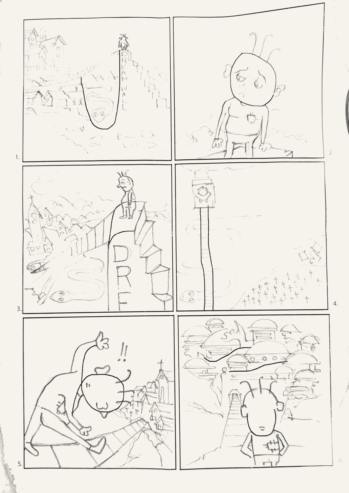
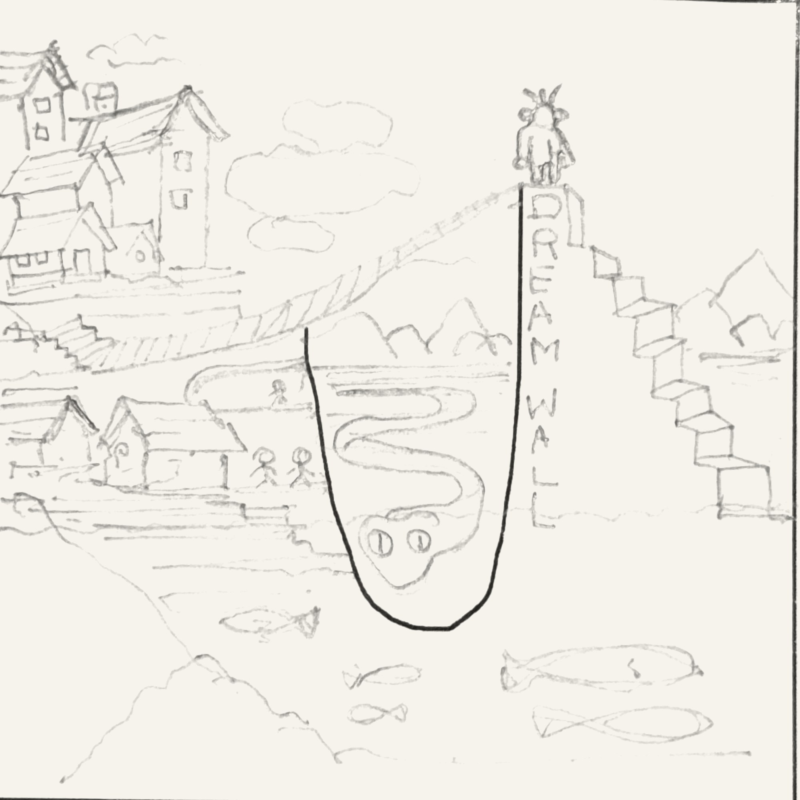
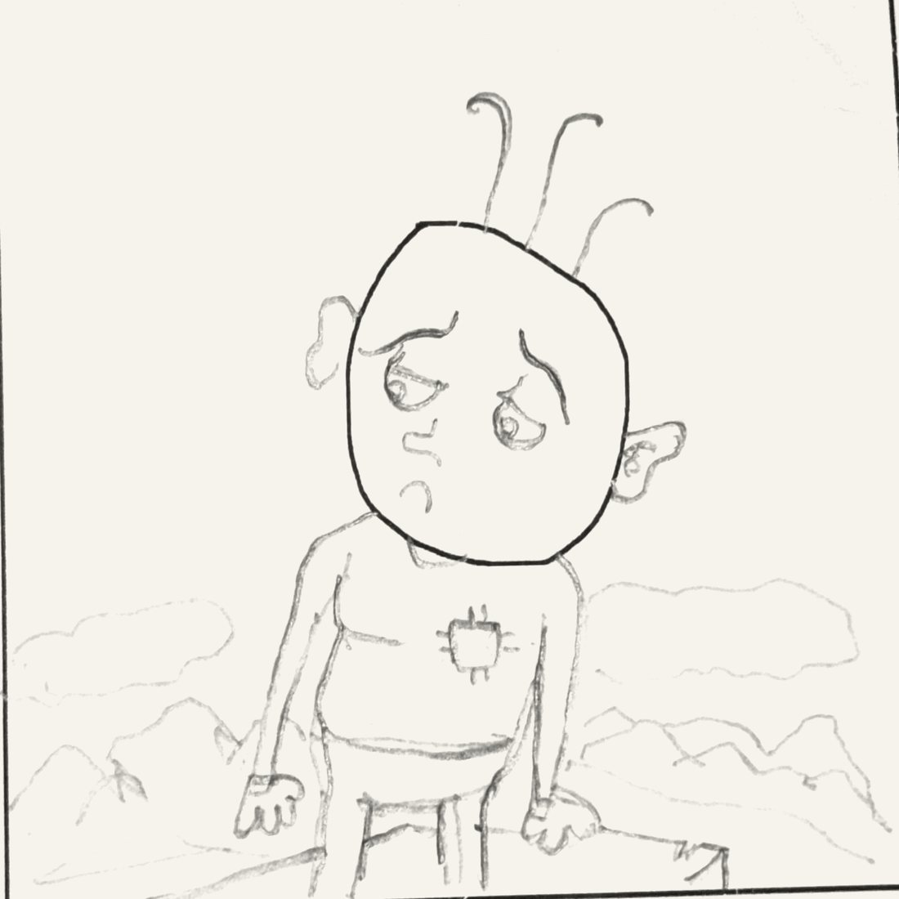
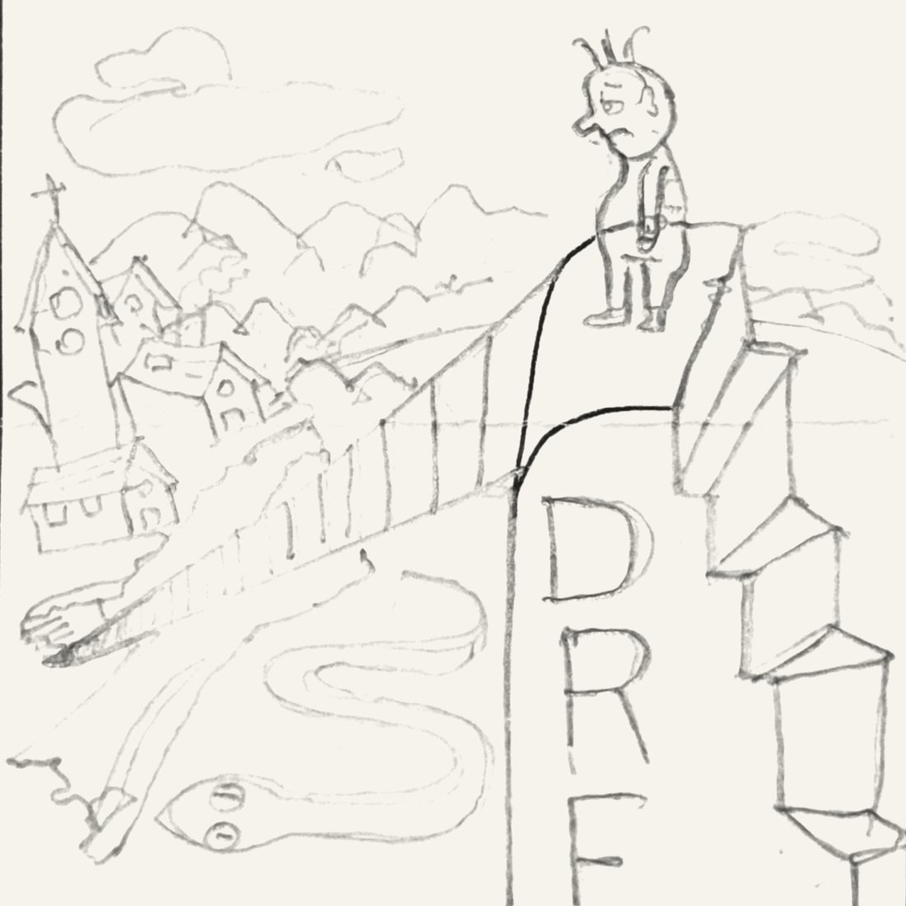
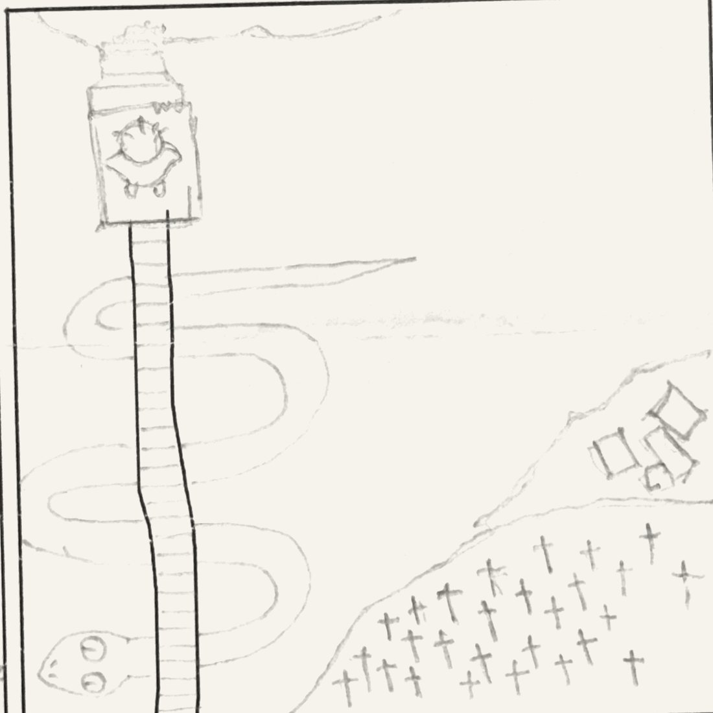
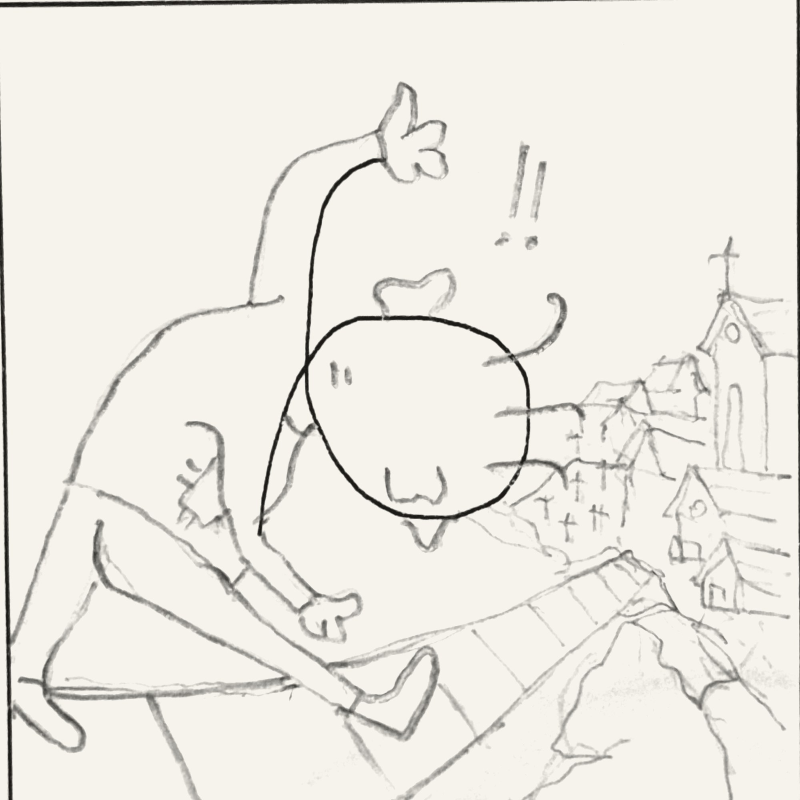
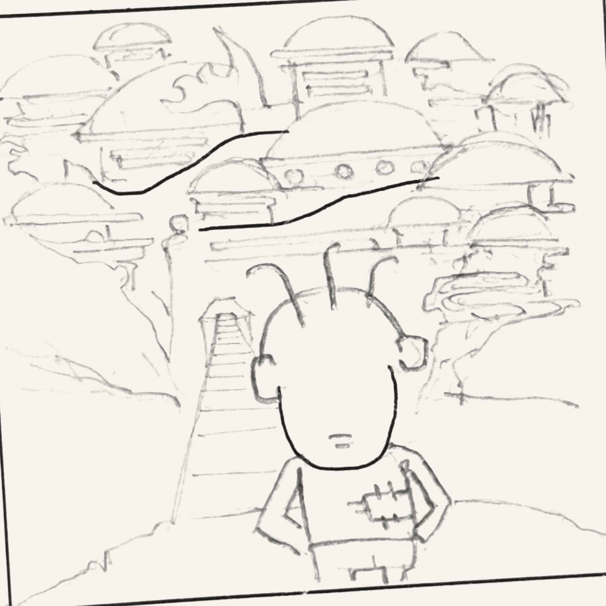

The story · 2021
A story from six lines
I didn't plan a story first. I drew six empty frames, put a single dark line in each, and just looked at them. One line looked like a snake lying in a gap. One looked like a bridge. One was round, like a head.
The head got three hairs and a name, Baldy Lock. He's an ordinary guy standing on his Dream Wall, wondering if he reached his dream or lost it on the way. I wrote the script in my notebook in English and Urdu, like a short film, with the shots and where the violin comes in.
One line, four jobs: the line, the python, the bridge, Baldy Lock. Move sideways to scrub

-

Scene 1 Narration
Once upon a time there lived an ordinary guy named Baldy Lock, with three hairs. He was standing on a pillar of the Dream Wall, wondering whether his dream had been achieved, or lost.
[ violin music playing in the background ]
The starting line: a deep U. It became the gap under the wall, and the python lying in it.
-

Scene 2 Close shot of Baldy Lock
آج پھر آیا ہوں اس پل پہ، جس پل چلا تھا اک خواب لے کے
وہی ہے وہ سانپ، کہ تھا جس سے ڈر وہ جو آج ہے
کیا پایا اُس خواب کو پا کے، جو چلا تھا لے کے اس پل سے"I'm back again on this bridge, with the dream I had when I first came. This is the same python, and the same fear I feel today. What have I achieved after finding that dream? And how did I walk this bridge?"
The starting line: a closed curve. It became his head.
-

Scene 3 He gazes at the village where he was born, still smiling like a mother
دیکھ تو سکتا ہوں تجھے، پر تو بڑی دور ہے
آج بھی وہ ڈر ہے اس پل سے اور اس سانپ سے
اور یوں نہ ہو کہ گر جاؤں، اور گرتے ہوئے سوچوں: ہائے، خواب اب بھی دور ہے"I can see you, but you're too far. I am scared of this bridge, and of that python. What if I fall, and while falling I wonder: now my dream is far too."
The starting line: a branch. It became the edge of the wall and the start of the bridge.
-

Scene 4 Bird's-eye view
A cemetery between east and south, with a few houses. East and west are all covered by a river with a big snake in it, and only a bridge as a passage.
[ the violin continues ]
The starting line: two long parallels. They became the only bridge across.
-

Scene 5 Worm's-eye view · Narration
He took the first step with bravery, and with a jug full of fear. With that first step, he was on his way to the village.
[ excited orchestra in the background ]
The starting lines: a long bent stroke and a loop. They became his raised arm and his head, mid-stride.
-

Scene 6 Baldy Lock, relaxed, gazing at the elite society that was his dream
"It is only now I have realised: peace is not connected with the dream. A restless man in a mansion doesn't have a home, only a house."
The end.
The starting lines: two broken strokes and a tall oval. They became the terraces of the city he wanted, and the back of his head.
A line can be a wall, a snake, a bridge or a person. It can't decide which on its own. Somebody has to look at it long enough. That part is the drawing, and it's the part I love.